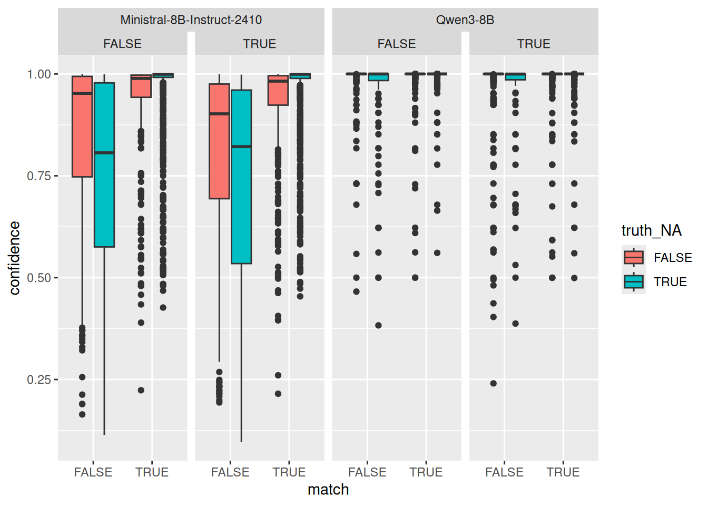

6 A tibble: 4 × 4
model n_cols_T_EUR_0 n_cols_T_EUR_1 n_cols_T_EUR_2
Code
# df_real_table_extraction_synth_respect_units %>% group_by(model, method, respect_units, n_col_T_EUR) %>% reframe(mean_num = mean(percentage_correct_numeric)) %>% pivot_wider(names_from = respect_units, values_from = mean_num, names_prefix = "units_") %>% mutate(delta = units_FALSE - units_TRUE) %>% select(-c(units_FALSE, units_TRUE)) %>% ggplot() + geom_histogram(aes(x = delta)) + facet_grid(model~n_col_T_EUR)Code
df_real_table_extraction_synth_respect_units %>%
ggplot() +
geom_boxplot(aes(x = 1, fill=respect_units, y = percentage_correct_total), alpha = .3) +
geom_jitter(
data = . %>% filter(n_col_T_EUR > 0),
aes(x = 1, group=respect_units, color = factor(n_col_T_EUR), y = percentage_correct_total),
height = 0, alpha = .5, width = 0.3
) +
scale_fill_manual(values = c("blue", "orange")) +
scale_x_discrete(guide = guide_axis(angle = 30)) +
facet_nested(method_family+n_examples~model+respect_units) +
theme(
legend.position = "bottom"
)
Figure 6.1: Comparing the effect on overall perfrormance if currency units should be respected on all predictions and specifically on predictions where all or just some columns have units.
Code
df_real_table_extraction_synth_respect_units %>%
ggplot() +
geom_boxplot(aes(x = 1, fill=respect_units, y = percentage_correct_numeric), alpha = .3) +
geom_jitter(
data = . %>% filter(n_col_T_EUR > 0),
aes(x = 1, group=respect_units, color = factor(n_col_T_EUR), y = percentage_correct_numeric),
height = 0, alpha = .5, width = 0.3
) +
scale_fill_manual(values = c("blue", "orange")) +
scale_x_discrete(guide = guide_axis(angle = 30)) +
facet_nested(method_family+n_examples~model+respect_units) +
theme(
legend.position = "bottom"
)
Figure 6.2: Comparing the effect on numeric perfrormance if currency units should be respected on all predictions and specifically on predictions where all or just some columns have units.
Code
df_real_table_extraction_synth_respect_units %>%
ggplot() +
geom_boxplot(aes(x = 1, fill=respect_units, y = NA_F1), alpha = .3) +
geom_jitter(
data = . %>% filter(n_col_T_EUR > 0),
aes(x = 1, group=respect_units, color = factor(n_col_T_EUR), y = NA_F1),
height = 0, alpha = .5, width = 0.3
) +
scale_fill_manual(values = c("blue", "orange")) +
scale_x_discrete(guide = guide_axis(angle = 30)) +
facet_nested(method_family+n_examples~model+respect_units) +
theme(
legend.position = "bottom"
)
Figure 6.3: Comparing the effect on NA F1 score if currency units should be respected on all predictions and specifically on predictions where all or just some columns have units.
Code
confidence_vs_truth <- df_real_table_extraction_synth %>%
# filter(model == "Qwen3-8B") %>%
filter(model == "Ministral-8B-Instruct-2410") %>%
group_by(method, model) %>% mutate(
mean_percentage_correct_total = mean(percentage_correct_total, na.rm=TRUE), .before = 1
) %>% group_by(ignore_units) %>%
arrange(desc(mean_percentage_correct_total)) %>%
slice_max(mean_percentage_correct_total, n = 1, with_ties = TRUE) %>%
mutate(predictions_processed = map(predictions, ~{
.x %>%
select(-"_merge") %>%
mutate(
match = (year_truth == year_result) | (is.na(year_truth) & is.na(year_result)),
confidence = confidence_this_year,
truth_NA = is.na(year_truth),
predicted_NA = is.na(year_result),
.before = 4
) %>% nest(
tuple_year = c(match, confidence, truth_NA, predicted_NA)
) %>%
mutate(
confidence = confidence_previous_year,
match = (previous_year_truth == previous_year_result) | (is.na(previous_year_truth) & is.na(previous_year_result)),
truth_NA = is.na(previous_year_truth),
predicted_NA = is.na(previous_year_result),
.before = 4
) %>% nest(
tuple_previous_year = c(match, confidence, truth_NA, predicted_NA)
) %>% select(
-c(year_truth, previous_year_truth, year_result, previous_year_result,
confidence_this_year, confidence_previous_year)
) %>%
pivot_longer(-c("E1", "E2", "E3")) %>%
unnest(cols = value) %>% mutate(
match = if_else(is.na(match), FALSE, match)
)
})) %>%
unnest(predictions_processed) %>% mutate(
match = factor(match, levels = c(F, T)),
truth_NA = factor(truth_NA, levels = c(F, T))
)
confidence_vs_truth %>% ggplot() +
geom_boxplot(
aes(x = match, y = confidence, fill = truth_NA),
position = position_dodge2(preserve = "single")) +
scale_fill_discrete(drop = FALSE) +
scale_x_discrete(drop = FALSE) +
facet_wrap(~ignore_units)
Code
confidence_vs_truth %>%
mutate(
conf_interval = cut(confidence, breaks = seq(0, 1, by = 0.05), include.lowest = TRUE),
conf_center = as.numeric(sub("\\((.+),(.+)\\]", "\\1", levels(conf_interval))[conf_interval]) + 0.005
) %>%
group_by(conf_center, predicted_NA, ignore_units) %>%
summarize(
n_true = sum(match == TRUE, na.rm = TRUE),
n_false = sum(match == FALSE, na.rm = TRUE),
total = n_true + n_false,
chance_false = if_else(total > 0, n_false / total * 100, NA_real_),
.groups = "drop"
) %>%
ggplot(aes(x = conf_center, y = chance_false, color = predicted_NA)) +
geom_point(alpha = 0.7) +
geom_smooth(method = "lm", se = TRUE) +
labs(x = "Confidence Interval Center", y = "Chance False (%)", color = "Predicted NA") +
coord_cartesian(ylim = c(0, 100), xlim = c(0,1)) +
facet_wrap(~ignore_units)